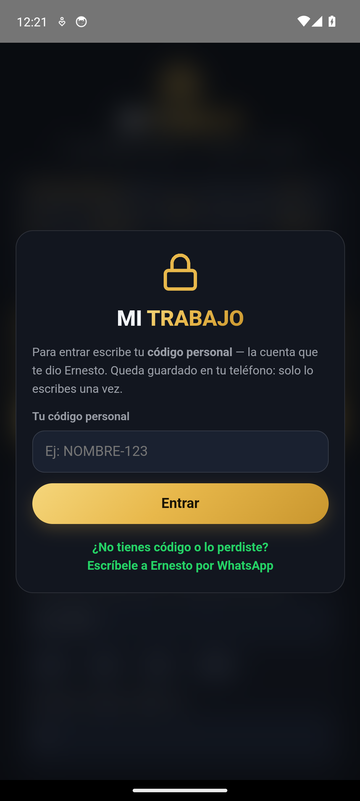
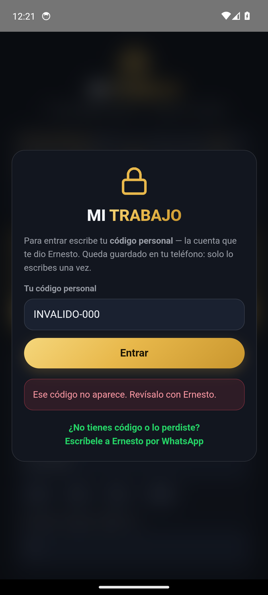

Recorrido automático en un teléfono Android virtual (Pixel · Android 14) con la APK exacta del release. #E8B84B (hora de Cuba).
PARCIAL
Al reabrir la app para el recorrido interior, la puerta no apareció en el teléfono virtual. La puerta y el rechazo del código inválido sí quedaron probados en la primera parte. El aviso de código inválido se vio en pantalla.

La puerta de acceso: la app pide el código personal

Código inválido: la app lo rechaza con su aviso, sin dejar entrarAl reabrir la app, la puerta no apareció
Esto es un teléfono virtual, no uno físico: sirve para cazar errores de arranque, diseño y navegación antes de entregar la APK. La prueba final — que el aviso llegue de verdad — sigue siendo en el teléfono de un buscador.